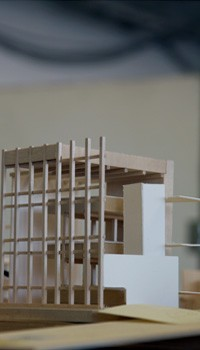

The Master of Science in Architecture is a post-professional degree, usually best suited to those who have completed a professional bachelor's degree, or those who have strong backgrounds in other fields and whose interest in architecture is of a theoretical or investigative nature. The program's broadly intellectual emphasis enables in-depth critical involvement and methodological acuity. The small program, with fewer than 20 students, enjoys the advantages of low student-faculty ratios and informality with most courses following the seminar format. Attractions of the ProgramWhile concentrating on the specific areas of research, the Master of Science in Architecture degree encourages students to explore rich possibilities in: Theoretical Explorations Interdisciplinary Studies Intensive Mentoring in Research and Publication Diverse Specialization Opportunities Historic Preservation Track Helpful Links |
 |